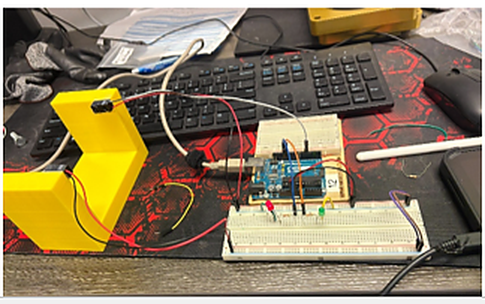

Dometic · Co-Op
Projects at Dometic
A closer look at the maintenance, controls, and mechanical design work from my Maintenance Coordinator co-op — Sept 2025 to April 2026. Write-ups and photos for each project are on the way.

Asset Management System
A SCADA-based maintenance platform built in Ignition to replace paper logs and spreadsheets — digitizing three buildings of assets, PM tasks, and personnel, then automating weekly scheduling with an 85%+ completion rate.

Air Barrier Filtration System
A modular sheet-metal filtration retrofit designed from scratch in Creo to stop airborne oil and dust from CNC machines and lathes from passing straight through the warehouse air barriers.

Drake CNC Piping Repair
Tracing an oil leak on Dometic's Drake CNC lathes back to their piping, then rebuilding it machine by machine in ABS — including a mounting flange reverse-engineered and fabricated internationally.

Digital Lock Box
An early concept and Arduino prototype for a visible lockout/tagout lock box, designed to replace a key-based safety interlock on a robotic work cell.